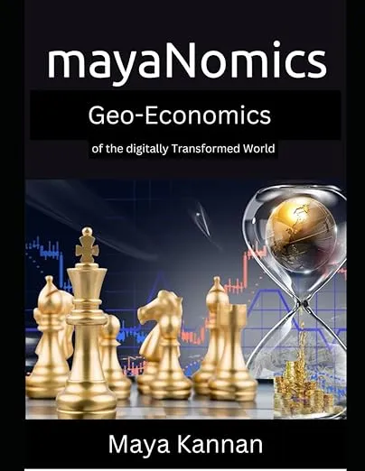
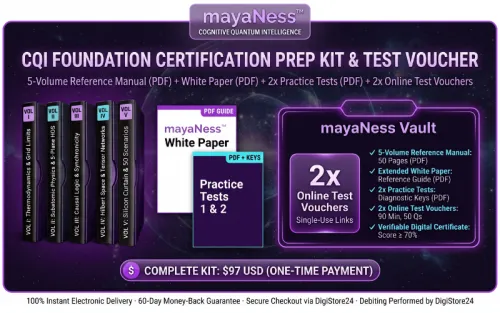

A Play Book on GeoEconomicc and Investment for the New World
Product profile · Marketplace data 2026-10-14 · Sales-page research 2026-10-14 · Categories: Business & Investment, Politics & Economy
- A Play Book on GeoEconomicc and Investment for the New World is a e-books in Business & Investment and Politics & Economy sold through the Digistore24 marketplace by vendor mayakannan, listed since 2026-09-19.
- List price $57.93 (single payment) — checkout, delivery and refunds are handled by Digistore24 itself, not the vendor.
- Buyer protection: the sales page advertises a money-back guarantee — confirm the exact window at checkout.
Interested in A Play Book on GeoEconomicc and Investment for the New World? The current price, bonuses and guarantee terms live on the vendor's official page:
Check the official sales page
Affiliate link — we may earn a commission at no extra cost to you.

Marketplace record
| Product type | E-books |
|---|---|
| Price | $57.93 (Single payment) |
| Refund window | Per the vendor's sales page — check the official page before buying |
| Vendor | mayakannan (listed since 2026-09-19) |
Vendor's marketplace description
mayaNomics: GeoEconomics of the Digitally Transformed World A practical guide to the statecraft of geoeconomics, with concepts and frameworks for investors, professionals, diplomats, corporate leaders, and public-sector decision-makers. Explore frameworks for navigating geopolitical change, digital transformation, and cross-border investment decisions in the AI era. What this book is A Practical Framework for a Changing World. Traditional macroeconomic models were built for a different era. This book examines how sanctions, cyber risk, and AI-driven statecraft are reshaping the context for cross-border investment and economic decision-making. mayaNomics: GeoEconomics of the Digitally Transformed World introduces multi-axis tensor field engineering, cognitive command frameworks, and post-quantum architecture as lenses for understanding complex economic systems. Drawing on more than 7,000 years of trade history — from the decentralised governance of the ancient Sangam Tamil kingdoms to modern techno-nationalism — the book offers a perspective on how technology, institutions, and economic power interact. Core frameworks Three Frameworks for Geoeconomic Analysis 01 Tensor Field Engineering Beyond Linear Models This framework introduces a 9-characteristic tensor matrix for examining geopolitical conditions, currency movements, and regulatory friction across multiple dimensions. It is presented as a structured analytical lens, not a prediction or investment recommendation. 02 Cognitive Command mayaNess™ explores how decision-makers can distinguish signal from noise when conditions are uncertain. It is a conceptual framework for disciplined judgment and human oversight of automated systems. 03 karmaCapsule Network (KCN) Securing Digital Systems The karmaCapsule Network (KCN) is introduced as a conceptual approach to post-quantum system design and data resilience. The discussion is educational and does not represent a certification, security guarantee, or deployment claim. Inside the book 12 Chapters. One Complete Operating System. Chapters 1–3: Foundations & History Traces the evolution of trade and economic statecraft across 7,000 years — from Sangam Tamil kingdoms to modern techno-nationalism. Positions deep-tech innovation and knowledge as the primary drivers of sovereign power, expanding Susan Strange's four pillars for the AI age. Chapters 4–6: State Dynamics & Digital GeoEconomics Models the economy as a computational State Machine governed by deterministic state transitions. Analyses Digital GeoEconomics — CBDCs, semiconductor chokepoints, cyber diplomacy — and the balance between individual agency, collectivism, and national wealth creation. Chapters 7–9: Asset Architecture & Deep-Tech Establishes Value-Oriented Architecture (VOA) — aligning financial assets with real-world infrastructure and verified production. Details how AI and quantum-resistant substrates (the KCN) create new classes of autonomous, sovereign-grade assets immune to fiat devaluation. Chapters 10–12: Strategic Execution Delivers the mayaNomics Framework Blueprint: 30 actionable principles including Transformational Unions, Cause-Level Agreements (CLAs), and Cumulative Cause-Effect dynamics. The governance protocols for managing transition into a digitally transformed global economy. Who this is for For Readers Exploring Geoeconomics Sovereign Wealth Fund Directors Explore perspectives on economic statecraft, digital sovereignty, and the institutional questions shaping international trade and supply chains. Family Office CIOs & HNIs Consider how geopolitical change, sanctions, and cyber risk can inform long-term conversations about multi-jurisdictional holdings and governance. Institutional Legal Counsels Review ideas around digital sovereignty, cross-border capital mobility, and the legal questions raised by a fragmented global economy. Fund Managers & Enterprise Leaders Explore tensor field analysis and the evolving role of AI in economic systems, governance, and organisational decision-making. About the author Maya Suresh Kannan Convenor, mayaNomics GeoEconomics Forum Maya Suresh Kannan is the Convenor of the mayaNomics GeoEconomics Forum, Chief Investment Officer of Valiant Telos, an investment firm, and Founder and Chief of digiBlitz, a Quantum AI company. A geoeconomic strategist, fund manager, and DeepTech innovator with over 25 years of experience, he brings engineering precision, legal acumen, and economic philosophy to the global stage. mayaNomics codifies three decades of cognitive command and tensor field engineering into a practical operating system for the modern capital steward. https://www.linkedin.com/in/mayasureshkannan https://www.mayakannan.com
From the vendor's sales page
Page title: mayaNomics: GeoEconomics of the Digitally Transformed World — Official Book by Maya Suresh Kannan
Meta description: A practical guide to geoeconomics, tensor field engineering, and deep-tech asset resilience in a changing global economy. By Maya Suresh Kannan. Includes a 60-day money-back guarantee.
Headline
mayaNomics: GeoEconomics of the Digitally Transformed World
Section headlines
- A Practical Framework for a Changing World.
- Three Frameworks for Geoeconomic Analysis
- 12 Chapters. One Complete Operating System.
- For Readers Exploring Geoeconomics
- Traditional Economics vs. the mayaNomics Framework
- Maya Suresh Kannan
- The Complete Digital Edition
- Frequently Asked Questions
- Explore the Digital Edition
Opening copy
A practical guide to the statecraft of geoeconomics, with concepts and frameworks for investors, professionals, diplomats, corporate leaders, and public-sector decision-makers.
Explore frameworks for navigating geopolitical change, digital transformation, and cross-border investment decisions in the AI era.
Traditional macroeconomic models were built for a different era. This book examines how sanctions, cyber risk, and AI-driven statecraft are reshaping the context for cross-border investment and economic decision-making.
Guarantee language found: “60” — always confirm the current terms on the official page before relying on it.
CTA buttons: “Order the Digital Edition — CHF 49.99” · “Order Now — CHF 49.99”
Research method: raw HTML fetch · 1152 words on page · quality: rich · researched 2026-10-14. Full research file (MD) ↗
How products like this are delivered
General note about this product type (not vendor-specific instructions): E-books on Digistore24 are delivered as a digital download (usually PDF/EPUB): right after checkout you get a download link or member-area access, and can read on any device. For the exact usage of A Play Book on GeoEconomicc and Investment for the New World, the official sales page and included materials are the authoritative source.
What is A Play Book on GeoEconomicc and Investment for the New World?
A Play Book on GeoEconomicc and Investment for the New World is a e-books in the Business & Investment category of the Digistore24 marketplace, published by vendor mayakannan and on sale since 2026-09-19. The vendor describes it as follows: "mayaNomics: GeoEconomics of the Digitally Transformed World A practical guide to the statecraft of geoeconomics, with concepts and frameworks for investors, professionals, diplomats, corporate leaders, and public-sector decision-makers. Explore frameworks for " (vendor's marketplace description, lightly truncated).
A Play Book on GeoEconomicc and Investment for the New World pricing: what you will pay
The marketplace lists A Play Book on GeoEconomicc and Investment for the New World at $57.93 (single payment). Digistore24 adds any tax your country requires at checkout, where you see the final amount before paying. There is no separate marketplace-side fee; vendors may offer their own upsells after checkout.
A Play Book on GeoEconomicc and Investment for the New World refund policy and money-back guarantee
The sales page advertises: "60" (vendor claim). Refunds for Digistore24 purchases are processed through the platform: request via the support link in your order email, within the vendor's guarantee window shown at checkout. Practical advice: decide inside the window — if the product underdelivers, refund it rather than letting it ride.
Details and mechanics: how Digistore24 refunds work.
Who is A Play Book on GeoEconomicc and Investment for the New World for?
Based on its Business & Investment classification and single payment pricing, A Play Book on GeoEconomicc and Investment for the New World targets buyers looking for business & investment solutions at a mid-range price point. The honest test is not the category but your own situation: will you realistically use it within the refund window? If yes, the price is an investment; if not, it is clutter — regardless of quality.
Is A Play Book on GeoEconomicc and Investment for the New World legit? What to verify before buying
We do not rate legitimacy — nobody can, without using the product. What you can verify, all on this page: the vendor's marketplace history (listed since 2026-09-19), the verbatim sales-page extracts below (labeled vendor claims — their marketing, not our endorsement), the guarantee terms at checkout, and the delivery method. Red flags to check on any offer: pressure countdowns paired with vague refund terms, testimonials without dates, and vendor sites that hide pricing until checkout.
How do you access A Play Book on GeoEconomicc and Investment for the New World after buying?
Checkout runs on Digistore24. After payment: E-books on Digistore24 are delivered as a digital download (usually PDF/EPUB): right after checkout you get a download link or member-area access, and can read on any device. Keep your order email — it is your key to the e-books, your refund requests and Digistore24 buyer support.
A Play Book on GeoEconomicc and Investment for the New World reviews: how to research it properly
Third-party "reviews" of marketplace products are mostly affiliate content — including pages like this one, which earns a commission on purchases. Treat every review (ours included) as a starting point, then verify against primary sources: the vendor's own sales page, the Digistore24 refund policy, and — for business & investment — independent communities outside the affiliate ecosystem. On this page the sales-page extracts below are quoted verbatim, so you can judge the vendor's claims without clicking away.
How to buy A Play Book on GeoEconomicc and Investment for the New World safely
- Open the official sales page and read the full offer.
- Confirm the final price and the refund window on the Digistore24 checkout page — that page is binding, not any review.
- Pay inside the Digistore24 checkout (never by bank transfer or off-platform links).
- Save the order confirmation email; note the refund deadline in your calendar.
- Evaluate promptly. Digistore24 buyer support can help if the vendor is unresponsive.
Full research archive for this product (Markdown: complete marketplace record + verbatim sales-page extracts): A Play Book on GeoEconomicc and Investment for the New World — full data archive (Markdown file: 59367-a-play-book-on-geoeconomicc-and-investment-for-the-new-world.md).
- Listed price & billing — source: official Digistore24 marketplace API, snapshot 2026-10-14. The checkout page is always the binding source for the current price.
- Sales-page quotes & headline — source: https://mayanomics.org/book/digistore, fetched 2026-10-14 (method: raw HTML). Verify: open the official page.
- Guarantee / refund — set by the vendor; confirm on the sales page at purchase time.
- Not verified by us: product quality, outcomes, testimonials — no hands-on test has been performed for this listing.
Frequently asked questions about A Play Book on GeoEconomicc and Investment for the New World
Answers compiled from the marketplace snapshot (2026-10-14) and vendor sales-page research (2026-10-14); vendor claims are labeled inline.
What is A Play Book on GeoEconomicc and Investment for the New World?
A Play Book on GeoEconomicc and Investment for the New World is a e-books sold through the Digistore24 marketplace by vendor mayakannan, listed since 2026-09-19. It is filed under Business & Investment and Politics & Economy. Digistore24 handles checkout, delivery and refunds for this product.
How much does A Play Book on GeoEconomicc and Investment for the New World cost?
The Digistore24 marketplace lists it at $57.93 (single payment). Prices are set by the vendor and can change — the marketplace record above shows the snapshot; the official sales page shows the current price.
Is there a money-back guarantee for A Play Book on GeoEconomicc and Investment for the New World?
The vendor's sales page advertises: “60”. The guarantee window is set by the vendor — confirm the current terms on the official page before buying. Digistore24 handles the refund process.
Is A Play Book on GeoEconomicc and Investment for the New World legit?
We don't rate legitimacy — we publish verifiable data instead: vendor mayakannan (listed on Digistore24 since 2026-09-19), listed on the marketplace since 2026-09-19, with its complete sales-page research archived on this page (vendor claims labeled as such). Read our 6-point evaluation method and judge with the facts — or join the discussion about A Play Book on GeoEconomicc and Investment for the New World.
Where can I buy A Play Book on GeoEconomicc and Investment for the New World safely?
Only through the official sales page linked on this site (checkout and refunds run via Digistore24). Verify the price and guarantee there before ordering. That link is an affiliate link — buying through it supports this site at no extra cost to you.
How do I get A Play Book on GeoEconomicc and Investment for the New World after paying?
Checkout runs on Digistore24: after payment you receive your access or download by email and in your Digistore24 customer account. Delivery details for this product type: E-books on Digistore24 are delivered as a digital download (usually PDF/EPUB): right after checkout you get a download link or member-area access, and can read on any device. If anything fails, Digistore24 buyer support can recover your order.
All 50 buyer questions about Business & Investment — the full category FAQ.
Discuss A Play Book on GeoEconomicc and Investment for the New World on Reddit
Community threads are where real buyers compare notes. We link to communities, not to specific posts — threads move, subreddits stay:
- r/Entrepreneur — community discussions that often touch business & investment.
- r/smallbusiness — community discussions that often touch business & investment.
- Search Reddit for "A Play Book on GeoEconomicc and Investment for the New World" — real-time results, we don't control them.
- Top "review" mentions this year — sort by top, filter by recency yourself.
Related shopping on Amazon
Physical products and gear commonly bought alongside A Play Book on GeoEconomicc and Investment for the New World:
- Shop marketing books on Amazon — top results, Amazon's ranking.
- Bestsellers in marketing books — live Amazon list, we don't curate it.
Sponsored: as an Amazon Associate, DigistorePicks earns from qualifying purchases (tag adminstore05-20). Amazon sets its own prices and commissions (typically low single digits — far below Digistore24 vendors' 30–75%). We list Amazon as a convenience for physical goods; it is not an alternative to the digital product above.
Related offers in Business & Investment

This is one of the easiest offers to promote in the make money online space — and here's why. The angle sells itself. Everyone in the MMO niche has struggle

IC VIP Is The Best Crypto Education, Research, Community & Support Membership On The Internet with over 2000+ members worldwide! HIGH CONVERSIONS, LOW REFUN

#1 MAKE MONEY ONLINE WEBINAR ON DIGISTORE24 Top Converting Offer that converts all types of traffic - Biz Opp, Personal Development, IM, MMO like nuts. Make Up

Refer & Earn 55% Recurring Sales Commission. High-Ticket Sales Recurring Monthly Sales Commissions. Digital Member Product No Inventory or Premises Needed.
Other offers by mayakannan
Full catalog: mayakannan vendor hub — all listings with marketplace data.
Attention: Financial Publishers, B2B Marketers, and Executive Network Owners. The era of frictionless global trade is over. In a world defined by weaponized fin

Earn 75% Per Front-End Sale with the Financial Niche’s Most Sophisticated Macro-Intelligence Offer The Telos Intelligence Briefing: 75% Front-End Commissions on

Product Overview The CQI Foundation Certification Prep Kit & Test Voucher ($97 USD) is a high-converting, 100% digital self-study reference package and auto
A Play Book on GeoEconomicc and Investment for the New World is also listed in
Politics & Economy (22 products)
Similar price range in Business & Investment

AI Business Operator is a practical 60-day system for people who want to organize AI tools into real business workflows and service offers. It includes 12 AI se

Pattern Trader’s Atlas is a comprehensive technical-analysis reference covering 140 chart, candlestick, price-action, gap and harmonic patterns. Each pattern is
Earn 75% Per Front-End Sale with the Financial Niche’s Most Sophisticated Macro-Intelligence Offer The Telos Intelligence Briefing: 75% Front-End Commissions on

FROM €499 TO JUST €49.90! This Deal is So Good, It Almost Feels Illegal ! But it’s 100% Legit! For the first time ever, we’re bundling our flagship Millionaire
Related searches
Where to check it out
Read the vendor's full sales page (current price, guarantee terms and bonuses are listed there):
View official sales page
That link is an affiliate link — if you buy through it we earn a commission from the vendor at no extra cost to you.
Sources & further information
- Official sales page (current price, guarantee, bonuses): mayanomics.org/book/digistore (affiliate link)
- Public Digistore24 product page: checkout-ds24.com/product/726006
- Full research file (Markdown, versioned): content/products/59367-a-play-book-on-geoeconomicc-and-investment-for-the-new-world.md
- Marketplace category: Business & Investment
How we evaluate products like A Play Book on GeoEconomicc and Investment for the New World
Six checks, all on official marketplace numbers — earnings/sale ÷ cancel-rate skepticism × funnel fit. Read the full evaluation method · our research standards & labeling.
Questions, or own experience with A Play Book on GeoEconomicc and Investment for the New World?
We publish hands-on reviews only after buying a product ourselves — but your experience helps other readers: start or join the discussion about A Play Book on GeoEconomicc and Investment for the New World on GitHub. Found a wrong number? Report a correction — every page shows its data dates, and corrections are applied to the whole site.